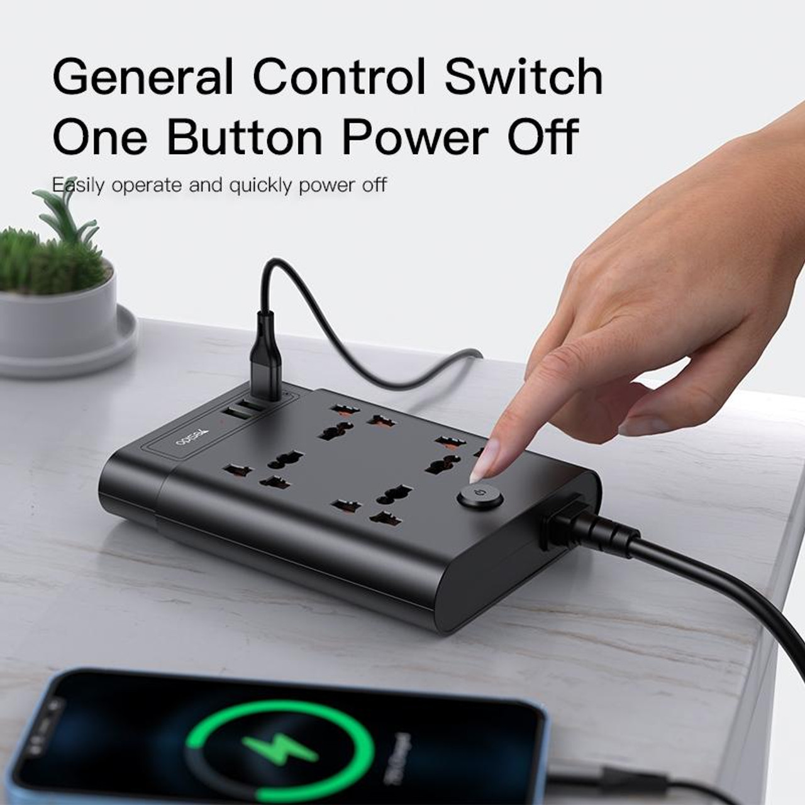

MC ELECTRONICS
WHO ARE WE ?
MC Electronics is a Multichoice accredited installer and insurance approved repaire. We will be able to provide the necessary reports on all legitmate claims for damaged items.
Mc Electronics opened its doors for the first time in 1990.From thebhumble beginning the business has grouwn into well-kknown business, specializing in installations and repaires.Joan Crouse the owner and manager has been at the steering whgeel from the start.His team is customer focused and he believes that the service you render, is your advertisement.
MC Electronics services mainly customers in Brackenfell and the Northen Suburbs.In 2011 MC Electronics became a accredited installer for Multichoice.MC Electronics is also a service provider for a well known insurance company.We do not only repair and install electronic items, but sell items for the DIY man.
For advice and free quotations feel free to contact MC Electronics.
OUR ITEMS:
